Offsets
An offset is the geometry at a constant distance from a path. planex2d has two kinds:
Wire().Offset(d)grows a wire into a face of width 2d, with round ends. Like a union, it is a result.sketch.Offset(source, d)adds new elements to the sketch at the distance d from a line, an arc, a spline or a chain of them. They are sketch elements like any other, with ids that later calls can refer to.
A slot around its center line, a seal groove around its seal line, a sheet from its inner surface and a cam from the path of its roller are all offsets. In a constraint sketch, the offset also stays tied to its source and its distance becomes a dimension. See Offsets and profiles revisited for details.
[1]:
import math
import planex as px
A heater track and a ring
The first example is a meander heater track, a path of six runs of 40 joined by half circles of radius 3, grown into a track 2 wide (Figure 1a). The second is a ring, the offset of a closed wire, a circle of radius 20, so it has no ends (b).
[3]:
s = px.QuickSketch()
for k in range(5):
s.Line(40).Arc(3, 180 if k % 2 == 0 else -180)
s.Line(40)
heater = s.Wire().Offset(1)
ring = px.Circle((0, 0), 20).Offset(1.5)
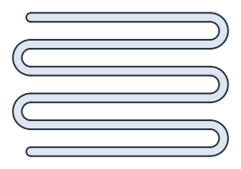
(a) A meander heater track
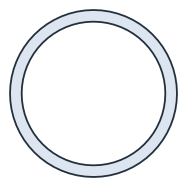
(b) A ring
Where the path is smooth and the band does not overlap itself, its area is exactly 2d times the length of the path, plus the two round end caps:
[5]:
length = 6 * 40 + 5 * math.pi * 3
print("heater area", heater.mass, "exact", 2 * length + math.pi * 1**2)
print("ring area", ring.mass, "exact", 4 * math.pi * 20 * 1.5)
heater area 577.3893722612839 exact 577.3893722612836
ring area 376.99111843077503 exact 376.99111843077515
A slot around a line
In a sketch, the offset of a line is a band with one side on its left and one on its right, joined by round caps at the ends. The example is a motor plate of 120 × 80 with two adjustment slots for M8 screws (Figure 2). Each slot is 9 wide, around a center line 20 long, 25 above or below the middle. Around it, a construction offset of 8 marks the clearance for the washer, 16 across.
The offset takes its properties from its source. The center lines are construction, so the slots are switched to drawn edges afterwards.
[6]:
plate = px.QuickSketch().RectangleC(120, 80, id="outline")
for k, y in enumerate((-25, 25)):
plate.Move((-10, y)).Line(20, 0, id=f"center{k}", construction=True)
plate.Offset(f"center{k}", 4.5, id=f"slot{k}", name="slot edge")
plate.Offset(f"center{k}", 8, id=f"washer{k}", name="washer")
plate(f"slot{k}").construction = False
part = plate.Face()
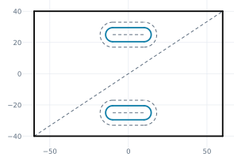
(a) Slot edges (blue), center lines and washers dashed
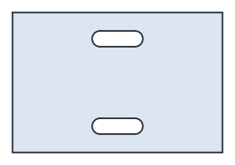
(b) The motor plate
Measure takes the id of a whole offset. The plate’s area and the length of the washer outlines follow from the slot and washer sizes:
[8]:
washers = sum(plate.Measure(f"washer{k}")["length"] for k in range(2))
print("area", part.mass, "exact", 120 * 80 - 2 * (20 * 9 + math.pi * 9**2 / 4))
print("washers", washers, "exact", 2 * (2 * 20 + math.pi * 16))
area 9112.765497529614 exact 9112.765497529614
washers 180.53096491487338 exact 180.53096491487338
A loop around a closed chain
The offset of a closed chain is one loop, outside for d > 0 and inside for d < 0. both_sides=True gives both sides, "<id>.left" inside the loop and "<id>.right" outside it. The example is a cover of 120 × 80 with the groove of an O-ring face seal, 4.8 wide, around a seal line of 100 × 60 with a corner radius of 10 (Figure 3a). The groove is a closed band, so the cover consists of two regions, the frame and the island inside the groove, and Shape() keeps both (Figure 3b).
[9]:
cover = px.QuickSketch().RectangleC(120, 80, id="outline")
cover.Move((-40, -30), dir=(1, 0))
for side in (100, 60, 100, 60):
cover.Line(side - 20).Arc(10, 90)
cover.Finish(id_wire="seal")
cover("seal").construction = True
cover.Offset("seal", 2.4, both_sides=True, id="groove")
cover("groove").construction = False
covered = cover.Shape()
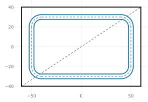
(a) The groove (blue) around the seal line
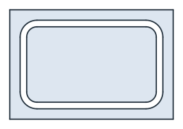
(b) The cover with its groove
Around a smooth closed line, the band between the two sides has an area of exactly its width times the length of the line, and each side is π times the width longer or shorter than the line:
[11]:
seal = 2 * (100 + 60) - 8 * 10 + 2 * math.pi * 10
band = px.Face([cover.Edge("groove.right")]) - px.Face([cover.Edge("groove.left")])
print("groove area", band.mass, "exact", 4.8 * seal)
print("outer", cover.Measure("groove.right")["length"], "exact", seal + math.pi * 4.8)
print("inner", cover.Measure("groove.left")["length"], "exact", seal - math.pi * 4.8)
groove area 1453.592894744621 exact 1453.5928947446203
outer 317.91149780902686 exact 317.91149780902686
inner 287.75220833456484 exact 287.7522083345649
A chain with corners, such as a rectangle, is offset differently on the two sides. Outside, the offset goes around each corner with an arc, named after the element whose end it goes around, such as "wall.box.Line.1.corner". Inside, the sides meet in sharp corners. The example is a box of 40 × 20 with a wall 2 outside (blue) and a lining 2 inside (amber) (Figure 4):
[12]:
box = px.QuickSketch().Rectangle(40, 20, id="box")
box.Offset("box", 2, id="wall").Offset("box", -2, id="lining")
print(box.elements["Arc"])
['wall.box.Line.1.corner', 'wall.box.Line.2.corner', 'wall.box.Line.3.corner', 'wall.box.Line.4.corner']
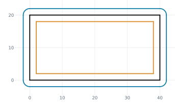
[14]:
print("wall", box.Measure("wall")["length"], "exact", 2 * (40 + 20) + 2 * math.pi * 2)
print("lining", box.Measure("lining")["length"], "exact", 2 * (36 + 16))
wall 132.5663706143592 exact 132.5663706143592
lining 104.0 exact 104
One side of an open chain
both_sides=False keeps one side of an open chain, without caps: the left side for d > 0. Its elements are named after their sources, such as "outside.web", without a side word. The example is a bent sheet, 2 thick, drawn from its inner surface: a flange 40 up, a bend of inner radius 4 and a web 30 to the right (Figure 5). The sheet lies to the left of the chain, on the outside of the bend. Two short lines close its ends, drawn to the offset’s end points, such as "outside.web.end".
[15]:
sheet = px.QuickSketch((0, 0), dir=(0, 1))
sheet.Line(36, id="flange").Arc(4, -90, id="bend").Line(26, id="web")
sheet.Offset(["flange", "bend", "web"], 2, both_sides=False, id="outside")
sheet.Line("outside.web.end", id="end")
sheet.Move("flange.start").Line("outside.flange.start", id="foot")
profile = sheet.Face()
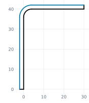
(a) The inner surface and its offset (blue)
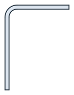
(b) The bent sheet
The outer bend radius is r + t = 6, and the area is t times the inner length plus t²/2 per radian of bend. A distance given as (d, point) selects the side the point is on instead. A point inside the bend gives the right side, with the radius r − t = 2:
[17]:
inner = 36 + 26 + math.pi / 2 * 4
print("area", profile.mass, "exact", 2 * inner + 2**2 / 2 * math.pi / 2)
print("outer bend radius", sheet.Geometry("outside.bend")["r"], "exact", 6)
other = px.QuickSketch((0, 0), dir=(0, 1))
other.Line(36, id="flange").Arc(4, -90, id="bend").Line(26, id="web")
other.Offset(["flange", "bend", "web"], (2, (5, 5)), id="inside")
print("inner bend radius", other.Geometry("inside.bend")["r"], "exact", 2)
area 139.70796326794903 exact 139.70796326794897
outer bend radius 6.0 exact 6
inner bend radius 2.0 exact 2
Ids and selection
Id |
What it is |
|---|---|
|
The whole offset, for |
|
The two sides of a two-sided offset, with their point elements; for a loop, |
|
The offset of the source element |
|
The offset of |
|
The arc around the end of |
|
The round caps |
A selection takes the whole offset or one side, and kind= narrows it down. Their properties can be set like those of any element, for example sk("slot0").col, .name, .maxh and .construction.
[18]:
print(sorted(i.split(".", 2)[2] for i in plate("slot0.left").ids))
print(sorted(i.split(".", 2)[2] for i in plate("slot0", kind="arc").ids))
['slot0.left.Point.1', 'slot0.left.Point.2', 'slot0.left.center0']
['slot0.endcap', 'slot0.startcap']
A cam from the path of its roller
A disc cam for a roller follower is designed backwards. The motion law gives the path of the roller’s center, the pitch curve, and the cam is the pitch curve offset inward by the roller radius. The example has a base circle of 25, a roller of 8, a harmonic rise of 10 over 120°, a dwell, the return over 120° and another dwell. The pitch curve is a closed spline through 48 of its points.
The offset of a spline is a derived curve: each of its points is the spline’s point moved by d along the normal, so it keeps the distance d exactly, not within a fit. Figure 6a shows the pitch curve dashed, the roller at a few positions and the cam in blue, and Figure 6b shows the cam.
[19]:
default = px.config.spline_tol
px.config.spline_tol = 1e-10
def rise(deg):
if deg < 120:
return 10 * (1 - math.cos(math.pi * deg / 120)) / 2
if deg < 180:
return 10
if deg < 300:
return 10 * (1 + math.cos(math.pi * (deg - 180) / 120)) / 2
return 0.0
path = []
for k in range(48):
deg = 360 * k / 48
rho, a = 25 + 8 + rise(deg), math.radians(deg)
path.append((rho * math.cos(a), rho * math.sin(a)))
cam = px.QuickSketch(path[0]).Spline(path[1:], periodic=True, id="pitch", construction=True)
cam.Offset("pitch", -8, id="profile")
cam("profile").construction = False
disc = cam.Face()
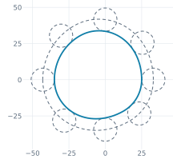
(a) Pitch curve and rollers dashed, the cam (blue)
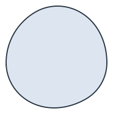
(b) The cam
The check measures, at points along the cam, how closely the cam keeps the roller radius from the pitch curve. It also compares the cam’s area with the area of the parallel curve, A − L·r + π·r², from the pitch curve’s area A and length L. Areas and Distance use the spline’s arc approximation, made when the spline is drawn, so this section draws with px.config.spline_tol at 10⁻¹⁰ (the default is 10⁻⁶ of the spline’s size). What remains in the checks is that approximation, not the offset.
Where only the result counts, Offset(d) of the region inside the pitch curve gives the cam as a face, on the exact parallel curve. It works in place, so the region becomes the cam:
[21]:
pitch = cam.Edge("pitch")
gaps = pitch.Distance(cam.Edge("profile").Polylines(1e-3)[0])
exact = px.Face([pitch]).mass - cam.Measure("pitch")["length"] * 8 + math.pi * 8**2
print(f"distance from the pitch curve: {gaps.min():.12f} to {gaps.max():.12f}")
print("area", disc.mass, "parallel curve", exact)
result = px.Face([pitch]).Offset(-8)
gaps = pitch.Distance(result.Polylines(1e-3)[0])
print(f"Offset(d) of the face: {gaps.min():.12f} to {gaps.max():.12f}")
print("its area", result.mass, "parallel curve", exact)
distance from the pitch curve: 7.999999985354 to 8.000000011528
area 2867.4271873236135 parallel curve 2867.427187208249
Offset(d) of the face: 8.000000000000 to 8.000000000000
its area 2867.4271872082313 parallel curve 2867.427187208249
A roller larger than the tightest bend of the pitch curve would leave a cusp on the cam. The offset refuses it, which serves as the designer’s undercut check:
[22]:
try:
cam.Offset("pitch", -36, id="big")
except ValueError as err:
print(err)
px.config.spline_tol = default
Offset('pitch'): the offset of pitch would have a cusp: d = 36 is not below 31.49724549514452, the radius of its tightest bend towards that side, at (20.089127157288363, -26.18066022961032)